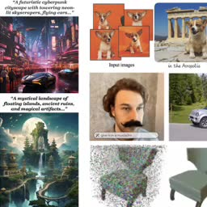
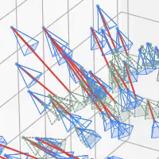
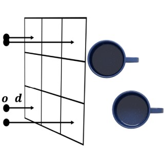
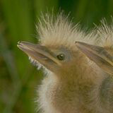
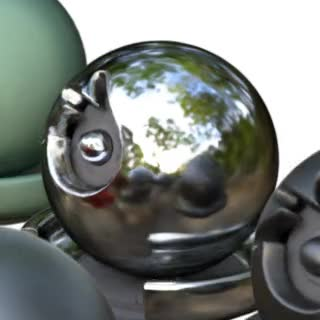

Research
I'm interested in computer vision, deep learning, generative AI, and image processing. Most of my research is about inferring the physical world (shape, motion, color, light, etc) from images, usually with radiance fields. Representative papers are highlighted .
Your browser does not support the video tag.
SMERF: Streamable Memory Efficient Radiance Fields for Real-Time Large-Scene Exploration
Daniel Duckworth* ,
Peter Hedman* ,
Christian Reiser ,
Peter Zhizhin ,
Jean-François Thibert ,
Mario Lučić ,
Richard Szeliski ,
Jonathan T. Barron
arXiv , 2023
project page
/
video
/
arXiv
Distilling a Zip-NeRF into a tiled set of MERFs lets you fly through radiance fields on laptops and smartphones at 60 FPS.
Your browser does not support the video tag.
Nuvo: Neural UV Mapping for Unruly 3D Representations
Pratul Srinivasan ,
Stephan J. Garbin ,
Dor Verbin ,
Jonathan T. Barron ,
Ben Mildenhall
arXiv , 2023
project page
/
video
/
arXiv
Neural fields let you recover editable UV mappings for the challenging geometries produced by NeRF-like models.
Your browser does not support the video tag.
ReconFusion: 3D Reconstruction with Diffusion Priors
Rundi Wu* ,
Ben Mildenhall* ,
Philipp Henzler ,
Keunhong Park ,
Ruiqi Gao ,
Daniel Watson ,
Pratul P. Srinivasan ,
Dor Verbin ,
Jonathan T. Barron ,
Ben Poole ,
Aleksander Holynski*
arXiv , 2023
project page
/
arXiv
Using a multi-image diffusion model as a regularizer lets you recover high-quality radiance fields from just a handful of images.
Your browser does not support the video tag.

State of the Art on Diffusion Models for Visual Computing
Ryan Po ,
Wang Yifan ,
Vladislav Golyanik ,
Kfir Aberman ,
Jonathan T. Barron ,
Amit H. Bermano ,
Eric Ryan Chan ,
Tali Dekel ,
Aleksander Holynski ,
Angjoo Kanazawa ,
C. Karen Liu ,
Lingjie Liu ,
Ben Mildenhall ,
Matthias Nießner ,
Björn Ommer ,
Christian Theobalt ,
Peter Wonka ,
Gordon Wetzstein
arXiv, 2023
A survey of recent progress in diffusion models for images, videos, and 3D.
Your browser does not support the video tag.

CamP: Camera Preconditioning for Neural Radiance Fields
Keunhong Park ,
Philipp Henzler ,
Ben Mildenhall ,
Jonathan T. Barron ,
Ricardo Martin-Brualla
SIGGRAPH Asia , 2023
project page
/
arXiv
Preconditioning based on camera parameterization helps NeRF and camera extrinsics/intrinsics optimize better together.
Your browser does not support the video tag.
Zip-NeRF: Anti-Aliased Grid-Based Neural Radiance Fields
Jonathan T. Barron ,
Ben Mildenhall ,
Dor Verbin ,
Pratul Srinivasan ,
Peter Hedman
ICCV , 2023 (Oral Presentation, Best Paper Finalist) project page
/
video
/
arXiv
Combining mip-NeRF 360 and grid-based models like Instant NGP lets us reduce error rates by 8%–77% and accelerate training by 24x.
Your browser does not support the video tag.
DreamBooth3D: Subject-Driven Text-to-3D Generation
Amit Raj , Srinivas Kaza , Ben Poole , Michael Niemeyer , Nataniel Ruiz ,
Ben Mildenhall , Shiran Zada , Kfir Aberman , Michael Rubinstein ,
Jonathan T. Barron , Yuanzhen Li , Varun Jampani
ICCV , 2023
project page /
arXiv
Combining DreamBooth (personalized text-to-image) and DreamFusion (text-to-3D) yields high-quality, subject-specific 3D assets with text-driven modifications
Your browser does not support the video tag.
BakedSDF: Meshing Neural SDFs for Real-Time View Synthesis
Lior Yariv* ,
Peter Hedman* ,
Christian Reiser ,
Dor Verbin , Pratul Srinivasan ,
Richard Szeliski ,
Jonathan T. Barron ,
Ben Mildenhall
SIGGRAPH , 2023
project page
/
video
/
arXiv
We use SDFs to bake a NeRF-like model into a high quality mesh and do real-time view synthesis.
Your browser does not support the video tag.
MERF: Memory-Efficient Radiance Fields for Real-time View Synthesis in Unbounded Scenes
Christian Reiser ,
Richard Szeliski ,
Dor Verbin ,
Pratul Srinivasan , Ben Mildenhall ,
Andreas Geiger ,
Jonathan T. Barron ,
Peter Hedman
SIGGRAPH , 2023
project page
/
video
/
arXiv
We use volumetric rendering with a sparse 3D feature grid and 2D feature planes to do real-time view synthesis.
Your browser does not support the video tag.
Eclipse: Disambiguating Illumination and Materials using Unintended Shadows
Dor Verbin ,
Ben Mildenhall ,
Peter Hedman , Jonathan T. Barron ,
Todd Zickler ,
Pratul Srinivasan
arXiv , 2023
project page
/
video
/
arXiv
Shadows cast by unobserved occluders provide a high-frequency cue for recovering illumination and materials.
AligNeRF: High-Fidelity Neural Radiance Fields via Alignment-Aware Training
Yifan Jiang ,
Peter Hedman ,
Ben Mildenhall ,
Dejia Xu , Jonathan T. Barron ,
Zhangyang Wang ,
Tianfan Xue
CVPR , 2023
project page
/
arXiv
Accounting for misalignment due to scene motion or calibration errors improves NeRF reconstruction quality.
Your browser does not support the video tag.
DreamFusion: Text-to-3D using 2D Diffusion
Ben Poole ,
Ajay Jain ,
Jonathan T. Barron ,
Ben Mildenhall
ICLR , 2023 (Oral Presentation, Outstanding Paper Award) project page
/
arXiv
/
gallery
We optimize a NeRF from scratch using a pretrained text-to-image diffusion model to do text-to-3D generative modeling.
Learning a Diffusion Prior for NeRFs
Guandao Yang ,
Abhijit Kundu ,
Leonidas J. Guibas ,
Jonathan T. Barron ,
Ben Poole
ICLR Workshop , 2023
Training a diffusion model on grid-based NeRFs lets you (conditionally) sample NeRFs.

MIRA: Mental Imagery for Robotic Affordances
Lin Yen-Chen ,
Pete Florence ,
Andy Zeng , Jonathan T. Barron ,
Yilun Du ,
Wei-Chiu Ma ,
Anthony Simeonov ,
Alberto Rodriguez ,
Phillip Isola
CoRL , 2022
NeRF lets us synthesize novel orthographic views that work well with pixel-wise algorithms for robotic manipulation.
SAMURAI: Shape And Material from Unconstrained Real-world Arbitrary Image Collections
Mark Boss ,
Andreas Engelhardt ,
Abhishek Kar ,
Yuanzhen Li ,
Deqing Sun ,
Jonathan T. Barron ,
Hendrik P. A. Lensch ,
Varun Jampani
NeurIPS , 2022
project page /
video /
arXiv
A joint optimization framework for estimating shape, BRDF, camera pose, and illumination from in-the-wild image collections.
Polynomial Neural Fields for Subband Decomposition
Guandao Yang* ,
Sagie Benaim* ,
Varun Jampani ,
Kyle Genova ,
Jonathan T. Barron ,
Thomas Funkhouser ,
Bharath Hariharan ,
Serge Belongie
NeurIPS , 2022
Representing neural fields as a composition of manipulable and interpretable components lets you do things like reason about frequencies and scale.

Fast and High-Quality Image Denoising via Malleable Convolutions
Yifan Jiang ,
Bartlomiej Wronski ,
Ben Mildenhall , Jonathan T. Barron ,
Zhangyang Wang ,
Tianfan Xue
ECCV , 2022
project page
/
arXiv
We denoise images efficiently by predicting spatially-varying kernels at low resolution and using a fast fused op to jointly upsample and apply these kernels at full resolution.
Your browser does not support the video tag.
NeRF-Supervision: Learning Dense Object Descriptors from Neural Radiance Fields
Lin Yen-Chen ,
Pete Florence ,
Jonathan T. Barron , Tsung-Yi Lin ,
Alberto Rodriguez ,
Phillip Isola
ICRA , 2022
project page /
arXiv /
video /
code /
colab
NeRF works better than RGB-D cameras or multi-view stereo when learning object descriptors.
Your browser does not support the video tag.

Ref-NeRF: Structured View-Dependent Appearance for Neural Radiance Fields
Dor Verbin ,
Peter Hedman ,
Ben Mildenhall , Todd Zickler ,
Jonathan T. Barron ,
Pratul Srinivasan
CVPR , 2022 (Oral Presentation, Best Student Paper Honorable Mention) project page
/
arXiv
/
video
Explicitly modeling reflections in NeRF produces realistic shiny surfaces and accurate surface normals, and lets you edit materials.
Your browser does not support the video tag.
Mip-NeRF 360: Unbounded Anti-Aliased Neural Radiance Fields
Jonathan T. Barron ,
Ben Mildenhall ,
Dor Verbin ,
Pratul Srinivasan ,
Peter Hedman
CVPR , 2022 (Oral Presentation) project page
/
arXiv
/
video
mip-NeRF can be extended to produce realistic results on unbounded scenes.
Area Chair, CVPR 2024
Demo Chair, CVPR 2023
Area Chair, CVPR 2022
Area Chair & Award Committee Member, CVPR 2021
Area Chair, CVPR 2019
Area Chair, CVPR 2018
Graduate Student Instructor, CS188 Spring 2011
Graduate Student Instructor, CS188 Fall 2010
Figures, "Artificial Intelligence: A Modern Approach", 3rd Edition
Basically
Squareplus: A Softplus-Like Algebraic Rectifier
A Convenient Generalization of Schlick's Bias and Gain Functions
Continuously Differentiable Exponential Linear Units
Scholars & Big Models: How Can Academics Adapt?